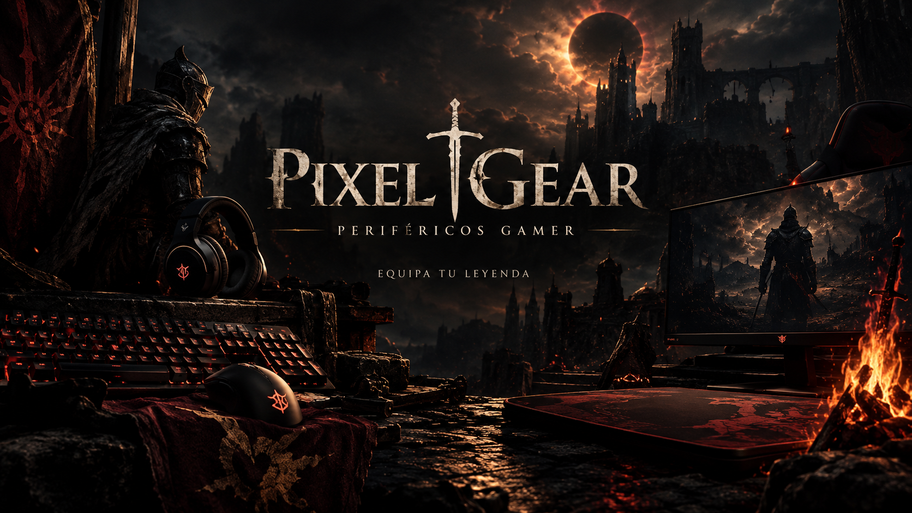

Nuestra misión
Entregar equipamiento confiable a precios justos, con información clara de cada producto para que la decisión de compra sea simple, incluso para quien recién se arma su primer setup.

PixelGear nació de una idea simple: los periféricos gamer no tienen por qué venderse con la misma estética genérica de siempre. Somos una tienda enfocada en hardware de alto rendimiento —teclados mecánicos, mouse, audífonos y monitores— para quienes se toman en serio cada partida.
Entregar equipamiento confiable a precios justos, con información clara de cada producto para que la decisión de compra sea simple, incluso para quien recién se arma su primer setup.
Este proyecto es desarrollado de forma individual por un estudiante de Desarrollo Fullstack en Duoc UC, como parte de la Evaluación Parcial N°1 de la asignatura DSY1104. Todo el frontend —estructura, estilos y lógica de validación— fue construido íntegramente para esta entrega.
Un vistazo rápido a lo que puedes esperar de tu próximo setup: